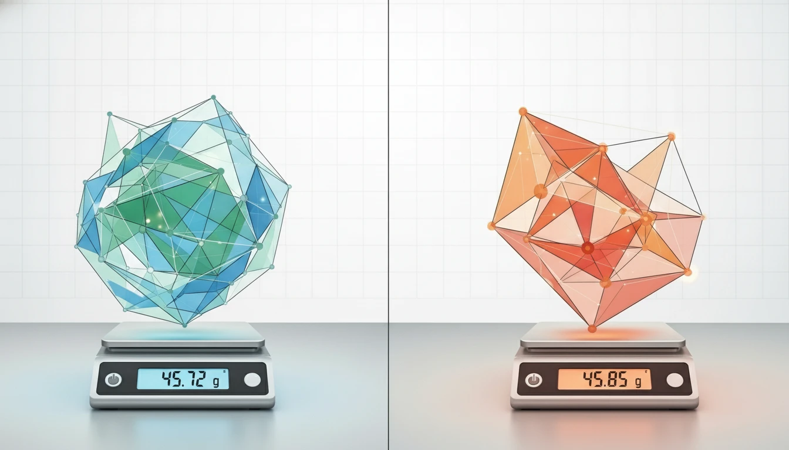

A/B Testing for Beginners: How to Test & Optimize Like a Pro (2025)

Stop guessing. Start testing. A/B testing tells you exactly what works—with data, not opinions. Here's how to do it.
What is A/B Testing?
A/B testing (split testing) is when you compare two versions of something to see which performs better.
Examples:
- Two email subject lines (which gets more opens?)
- Two landing page headlines (which gets more sign-ups?)
- Two CTA button colors (which gets more clicks?)
You show Version A to 50% of your audience and Version B to the other 50%. The one that wins becomes your new default.
Why A/B Testing Matters
Because assumptions are expensive. A/B testing removes guesswork and replaces it with proof.
Real example: Changing one word in a CTA button from "Start your free trial" to "Get started free" increased conversions by 14%.
The 4-Step A/B Testing Process
Step 1: Form a Hypothesis
Don't test randomly. Test with a purpose.
Bad hypothesis: "Let's try a red button."
Good hypothesis: "If we change the CTA button from blue to red, we'll get more clicks because red creates urgency."
Format: "If we change [X], then [Y] will happen because [Z]."
Step 2: Create Your Variations
Version A (Control): Your current version
Version B (Variant): Your new version with ONE change
Critical rule: Only test ONE thing at a time. If you change the headline AND the button color, you won't know which one caused the difference.
Step 3: Run the Test
Requirements:
- Enough traffic: You need at least 100 conversions per variation for reliable results
- Enough time: Run tests for at least 1-2 weeks to account for day-of-week variations
- Split evenly: 50/50 split between A and B
Step 4: Analyze Results
Look at:
- Conversion rate: Which version converted better?
- Statistical significance: Is the result reliable, or just luck? (Use a significance calculator—aim for 95%+)
If Version B wins with 95%+ confidence, implement it. If not, keep testing.
What Should You A/B Test?
For Emails:
- Subject lines
- Preview text
- Sender name ("John" vs. "John from Company")
- Send time
- CTA button text
For Landing Pages:
- Headlines
- Hero images/videos
- CTA button color, text, or placement
- Form length (5 fields vs. 3 fields)
- Social proof (testimonials, logos)
For Ads (Google/Facebook):
- Ad headlines
- Images
- CTA text
- Audience targeting
A/B Testing Tools
- Email: Mailchimp, ConvertKit, ActiveCampaign (built-in)
- Landing pages: Google Optimize (free), Optimizely, VWO
- Ads: Google Ads and Facebook Ads have built-in A/B testing
Common A/B Testing Mistakes
- Testing too many things at once: Change one variable at a time
- Stopping tests too early: Need statistical significance (95%+)
- Not enough sample size: 100+ conversions per variant minimum
- Ignoring "losers": Failed tests teach you what NOT to do
Real A/B Testing Example
Test: Email subject line
- Version A: "10 Tips to Grow Your Business"
- Version B: "Are you making these 10 mistakes?"
Result: Version B had a 22% higher open rate (curiosity-driven subject line won).
How to Scale A/B Testing
Once you master basic tests, move to:
- Multivariate testing: Test multiple elements simultaneously (requires more traffic)
- Sequential testing: Test one thing, implement the winner, then test the next element
Conclusion
A/B testing isn't complicated. Pick one thing to test, create two versions, run the experiment, and use the winner. Repeat monthly, and you'll compound small wins into massive growth.
Want to test your emails? Start by learning email marketing basics.